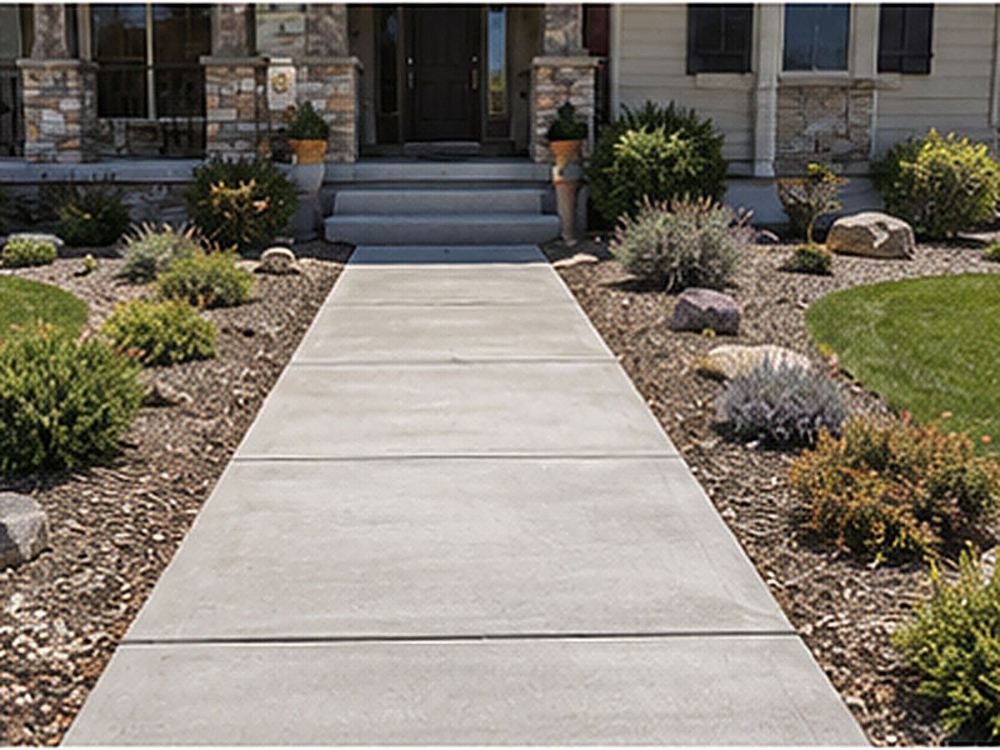

Sidewalks & walkways
Front walks, side paths, approaches and step-downs poured with the slope, joints and grip that keep them safe through every winter.

Walkways do quiet, constant work: they guide people to your door, connect the parts of a property, and take daily foot traffic in every kind of weather. Because they're often the first concrete a visitor walks on, they're also a big part of a home's first impression.
We pour walks, paths and approaches that look clean, drain properly and stay safe underfoot through Tooele Valley snow and ice.
From a straight front walk to a winding garden path or an approach connecting the driveway to the door, we pour walkways to the width, shape and route that suit your property. Curves, step-downs and landings are all part of the work, tied together so the whole route flows and sits level.
A flat walkway that holds water becomes an ice hazard the first cold night. We set a slight slope so water and snowmelt run off instead of pooling, place joints to control cracking, and choose a finish with enough texture to stay grippy when wet. In a climate with this much freeze-thaw, those details are what keep a walkway safe and sound.
For walks that serve businesses or public access, width, slope and cross-slope have to meet accessibility standards. We pour public-facing walkways and approaches to the applicable code and ADA requirements so they're compliant as well as durable.
Most walkways get a broom finish for traction, but decorative borders, exposed aggregate or a stamped accent can dress up an entry path. Control joints are placed at proper intervals to keep cracking tight and straight, so the joints read as part of the design rather than as damage.
Walkways are usually priced by the square foot like other flatwork, with the total driven by length, width, finish and any tear-out or grading. Shorter, simple paths are an affordable upgrade; longer or decorative runs cost more. We give you a free written estimate after seeing the route and the site.
Common questions
A comfortable front walk is usually wide enough for two people to pass or to carry things side by side. We'll recommend a width that suits your entry and traffic — generous enough to feel right without taking over the yard.
Properly built, it resists both. A compacted base, the right slope so water drains off, and control joints at correct spacing are what prevent the freeze-thaw heaving and random cracking you see in poorly poured walks. That prep is the difference.
We can pour a new section and tie it into existing walks with a clean joint and matching width. Exactly matching the color and finish of older, weathered concrete isn't always possible, and we'll be upfront about that before we start.
We pour approaches and public-facing flatwork to the applicable standards. For work in the public right-of-way, permits and city specs may apply — we'll let you know what's involved and pour to the required spec.
We use textured finishes like broom or exposed aggregate for grip, set proper drainage so water doesn't sit and freeze, and on any decorative or sealed sections we can add a non-slip additive. Safety in our winters drives those choices.
Related work
Connect your walkway into a patio or outdoor space.
Dress up an entry path with a decorative finish.
Replace cracked or heaved walks with safe, level concrete.
Free, no pressure
Call or text for the fastest answer — most estimates are scheduled within a day.
(385) 469-5163